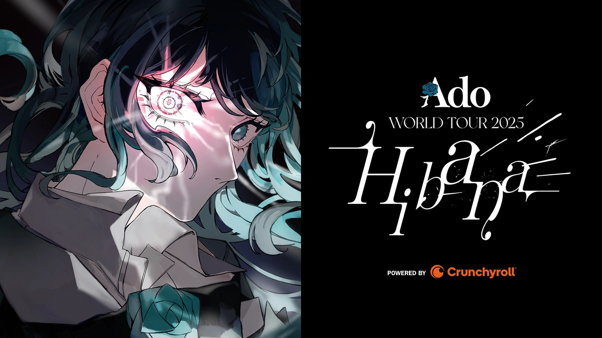

Ado ha realizado varias giras de conciertos, incluyendo la gira mundial "Ado WORLD TOUR 2025 'Hibana'" que comenzará en Japón en 2025.
Anteriormente, tuvo su primera gira mundial llamada "Wish".
“Si mi primera gira mundial encarnó mi ‘Wish’, entonces mi segunda encenderá la chispa que quiero encender en el mundo”, dijo Ado en un comunicado de prensa.
“Llamé a esta gira ‘Hibana’, que significa ‘chispa’ en japonés, para llevar mi herencia conmigo en este viaje. Mi objetivo es mostrar mi crecimiento desde la gira ‘Wish’ y ofrecer mis mejores actuaciones hasta ahora”.
Fotos de la gira "Hibana":
Videos de la gira (TikToks)
Videos de la gira (TikToks)